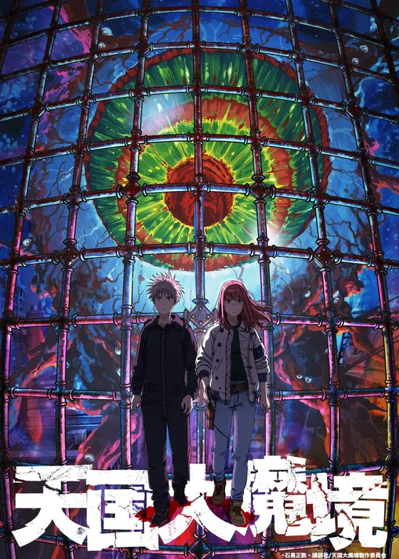
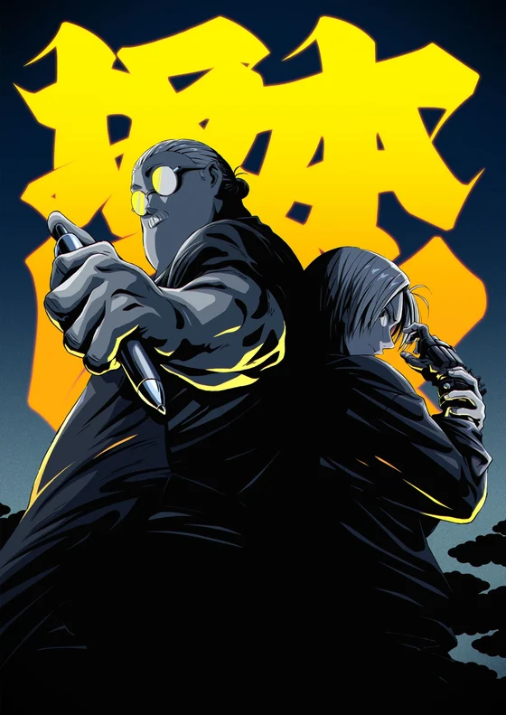

画像出典：TVアニメ『SPY×FAMILY』公式サイト（Season 4ティザービジュアル）
画像出典：TVアニメ『SPY×FAMILY』公式サイト（Season 4ティザービジュアル）アニメ
SPY×FAMILY
見放題アニメ化映画化日本漫画家協会賞
U-NEXTで見る ›U-NEXTで見放題の対象。31日間の無料トライアルがあります（条件は公式サイトで確認）。【PR】
正体を隠したスパイ・殺し屋・超能力者が家族を演じる、スパイコメディの物語。
名門校に潜入するスパイ〈黄昏〉に、任務が下る。「家族」を作れ。
娘役は心を読める超能力者、妻役は殺し屋。互いに正体を隠したまま、3人の暮らしが始まる。
作品情報
| 種類 | アニメ（原作：マンガ） |
|---|---|
| 配信状況 | 見放題 |
| 話数 | シーズン1〜3、劇場版も見放題 |
| 原作者 | 遠藤達哉 |
| 原作の巻数 | 既刊17巻（2026年4月現在） |
登場人物
 出典：TVアニメ『SPY×FAMILY』公式サイトロイド・フォージャー凄腕スパイ〈黄昏〉。家族の父親役
出典：TVアニメ『SPY×FAMILY』公式サイトロイド・フォージャー凄腕スパイ〈黄昏〉。家族の父親役 出典：TVアニメ『SPY×FAMILY』公式サイトアーニャ・フォージャー心を読める超能力者。娘役
出典：TVアニメ『SPY×FAMILY』公式サイトアーニャ・フォージャー心を読める超能力者。娘役 出典：TVアニメ『SPY×FAMILY』公式サイトヨル・フォージャー殺し屋。妻役
出典：TVアニメ『SPY×FAMILY』公式サイトヨル・フォージャー殺し屋。妻役 出典：TVアニメ『SPY×FAMILY』公式サイトボンドフォージャー家の犬
出典：TVアニメ『SPY×FAMILY』公式サイトボンドフォージャー家の犬 出典：TVアニメ『SPY×FAMILY』公式サイト／Wayback Machine保存（©遠藤達哉／集英社・SPY×FAMILY製作委員会）ユーリ・ブライアヨルの弟。表向きは外交官で、実は東国の国家保安局に所属する少尉
出典：TVアニメ『SPY×FAMILY』公式サイト／Wayback Machine保存（©遠藤達哉／集英社・SPY×FAMILY製作委員会）ユーリ・ブライアヨルの弟。表向きは外交官で、実は東国の国家保安局に所属する少尉 出典：TVアニメ『SPY×FAMILY』公式サイト／Wayback Machine保存（©遠藤達哉／集英社・SPY×FAMILY製作委員会）フランキー・フランクリン情報屋で〈黄昏〉の協力者。任務を支える発明品の制作も担う
出典：TVアニメ『SPY×FAMILY』公式サイト／Wayback Machine保存（©遠藤達哉／集英社・SPY×FAMILY製作委員会）フランキー・フランクリン情報屋で〈黄昏〉の協力者。任務を支える発明品の制作も担う視聴者の評価と声
4.1/ 5
Filmarks (Season1 第1クール)・55,222件・2026-11-24時点
家族の温かさコメディキャラが魅力的気軽に見られる
トップコメント
「偽装家族の安定した面白さ」
素性を隠した擬似家族の関係が魅力で、安心して楽しめる安定の面白さと感じたという声。
いいね 16「個性豊かなキャラクター」
キャラクターそれぞれに特徴があり、お互い反発せず自然に馴染んで観やすいという声。
いいね 15「食わず嫌いが覆った面白さ」
子供向けかと敬遠していたが、観てみると想像以上に面白く好きになったと感じたという声。
SPY×FAMILYの配信状況
- 2026年11月24日時点で、U-NEXTでは見放題の対象です（シーズン1〜3、劇場版も見放題）。見放題の範囲・配信期間は変わることがあるので、U-NEXTの作品ページで確認してください。
- 月額プラン：2,189円（税込）。見放題・ポイント作品の別は、U-NEXTの作品ページで確認できます。
原作マンガを読む
映像の前に原作を読みたい方は、『SPY×FAMILY』のマンガ紹介ページへ（あらすじ・登場人物・無料で読めるストアをまとめています）。
ほかのアニメ
見放題
ハイキュー!!
★4.4（44,769件）
1期〜TO THE TOPほか、劇場
くわしく見る ›
見放題
キングダム
★4.1（10,961件）
第1〜6シリーズ
くわしく見る ›
見放題
ブルーロック
★4.1（29,122件）
第1期24話・VS. U-20 JA
くわしく見る ›
ポイント作品
ザ・ファブル
★4.0（3,045件）
アニメ全25話はポイント作品
くわしく見る ›
ポイント作品

天国大魔境
★4.2（7,785件）
全13話
くわしく見る ›
見放題

SAKAMOTO DAYS
★3.7（16,427件）
全22話
くわしく見る ›
本ページの情報は2026年11月24日時点のものです。最新の配信状況はU-NEXTサイトにてご確認ください。配信状況は2026年11月24日にU-NEXTの公式サービスサイトで確認しました。紹介は当サイトの言葉でまとめたものです。内容と価格は変わることがあるため、申し込む前に公式サイトで確認してください。